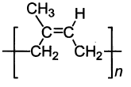
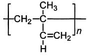
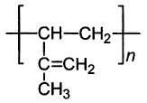
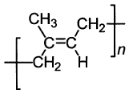
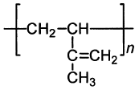

令和元年度（再試験） 問17 高分子化学
以下の図はイソプレンを重合して得られるポリイソプレンの分子構造を表している。このうち、分子鎖が動きやすい状態にあり、良好なゴム弾性を示すものはどれか。
①

②

③

④

⑤

正答
①
イソプレンは2-メチル-1,3-ブタジエンです。

天然ゴムのポリイソプレンは全てシス型でゴム弾性を示します。対し全てトランス型の場合はグッタペルカと呼ばれ、ゴム弾性は示しません。
シス型は折れ曲がり構造であるため分子鎖が伸びやすくなっています。伸びた分子鎖は加硫による架橋構造の影響で元の形状に戻ります。これがゴム弾性の原理です。